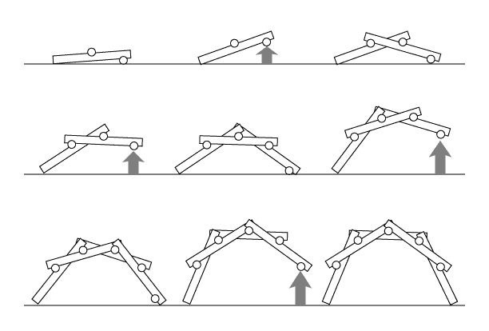
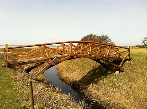

Challenge students to use their ingenuity to see if they can create a bridge using 18 sticks and nothing else - no tape, no glue, no nails. Don’t show them any pictures or give them any hints. Students that are up for a challenge can try to build a bridge that bridges a gap between tables (this would require 2-3 students working collaboratively). Encourage them to play with the sticks and see if any ideas come to mind. Eventually, one or more students will get the idea of weaving some sticks together. Now show them pictures of Leonardo's bridge. Some students will be able to build their own version with no other instructions. For everyone else, a step-by-step guide is provided below.

Modern bridges are built with high-strength materials and carefully-selected fasteners. Design considerations include the weight of the bridge and the load it carries as well as stresses caused by wind and earthquakes. Bridge components are subject to tension (pulling), compression (pushing), torsion (twisting), and shear (forces that act at an angle).
In 1480, Leonardo Da Vinci designed a transportable bridge that could be erected without tools. Leonardo’s arched bridge is brilliant in that the design is self-supporting, requiring no fasteners. Leonardo envisioned using nothing but large logs to build his bridge. The bridge’s own weight holds it together. As weight is added to the bridge, its structural elements are forced more tightly together, making it even stronger!
